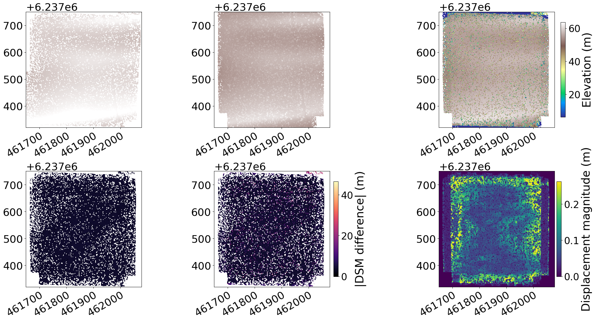
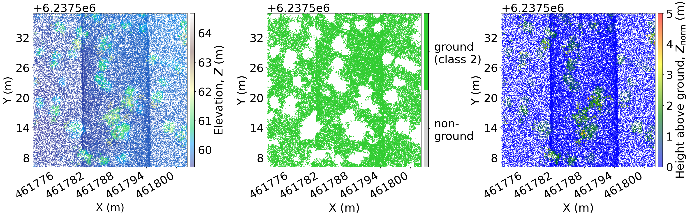
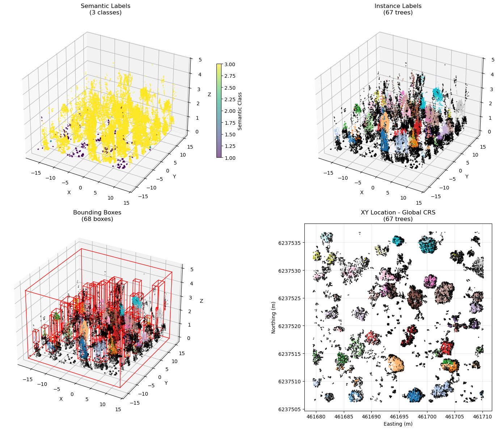

Prepare spatial data for analysis
This guide covers the five phases and model experiments of fvcStructureRangeland3D, with inputs, commands and outputs for each phase.
Citation
If you use this workflow, data or code, please cite:
Sotomayor, L.N., Lucieer, A., Turner, D., Barthelemy, J., Kattenborn, T. (2026). From 2D labels to 3D structure: Scalable label transfer and benchmarking of 3D vegetation models in rangeland ecosystems. EarthArXiv (preprint). https://doi.org/10.31223/X5948M
Submitted to the ISPRS Open Journal of Photogrammetry and Remote Sensing, special issue: “Advanced Uncrewed Vehicles solutions: at the crossroad of Remote Sensing, Computer Vision and Robotics”.
Contributions of the preprint
The preprint presents two contributions:
Transfer multispectral CNN vegetation labels to co-registered LiDAR, using height and crown consistency to label 3D points.
Explore label transferCompare zero-shot transfer, fine-tuning and training from scratch with ForestFormer3D, and zero-shot instance segmentation with SegmentAnyTree.
Explore experimentsData products and acknowledgements
We thank Megan Lewis for her expertise and contributions in rangeland remote sensing and ecology, including her contribution to the reference-labelling dataset. We also acknowledge the Terrestrial Ecosystem Research Network (TERN), particularly its Ecosystem Surveillance team and Landscapes program. We thank Ben Sparrow, Poornima Sivanandam and Juan Carlos Montes-Herrera for drone operation and data processing, and the Australian Landscape Trust's Calperum Station managers for access to the study sites.
The paper's manual labels and UAS imagery are available in Sotomayor et al. (2025), Fractional Vegetation Cover Mapping, Zenodo. The dataset credits TERN Landscapes and TERN Surveillance Monitoring for RGB and multispectral orthomosaic processing, and acknowledges contributors to reference labelling. See the record for the full creator list, citation and licence. The labelled 3D tiles, label-transfer data, split lists, pre-trained models and predictions are available in Sotomayor et al. (2026), Zenodo. The forest benchmark uses FOR-instanceV2.
We also acknowledge the developers of ForestFormer3D (Xiang et al., 2025) and SegmentAnyTree (Wielgosz et al., 2024) for the models used in the experiments.
Run the commands locally and record your own CRS, grids, parameters and outputs. Figures are historical examples from the paper's sites; select one to enlarge it. Their original colour maps may not suit every reader.
Set up the environment
Run these commands in Linux/WSL or Windows PowerShell, using the same environment for setup and processing.
Copy buttons appear when your browser permits clipboard access; otherwise select the command text manually.
1. Check the prerequisites
Install Git and uv if needed, then check that both are available:
git --versionuv --version2. Get the repository
Clone it once in the directory where you want to keep the project:
git clone https://github.com/LNSOTOM/fvc_structure.gitEnter the repository:
cd fvc_structure3. Create and check the Python environment
From the repository root, install the locked Python dependencies for Phases 1 and 2. The project requires Python 3.10 or 3.11; uv can obtain a compatible interpreter if needed.
uv syncCheck that Python starts and the processing libraries import:
uv run python --versionuv run python -c "import numpy, rasterio, scipy, skimage, laspy, yaml; print('Dependencies OK')"Expect Python 3.10 or 3.11 and Dependencies OK.
4. Check PDAL for Phase 1
DSM generation also needs the external pdal executable. Install it separately using the Phase 1 setup guide, then check that it is on the terminal's PATH:
pdal --versionPhase 2 does not require the PDAL executable.
Transfer labels in one call
The fvc3d package applies the Phase 4 method to your own data: it labels a LiDAR point cloud from a growth-form raster, after checking that the two line up.
A label GeoTIFF and a co-registered LAS/LAZ point cloud (requirements).
A LAS/LAZ file with classification, Z_norm and treeID, plus per-point arrays and quality reports in Python.
fvc3d replaces the Phase 4 mask, normalize and fuse stages. Ground classification and co-registration remain separate steps.1. Install
The environment setup already installs fvc3d. Check that it imports:
uv run python -c "import fvc3d; print('fvc3d', fvc3d.__version__)"To use it in another project (Python 3.10 or newer), install it from GitHub:
pip install "fvc3d @ git+https://github.com/LNSOTOM/fvc_structure.git"2. Run label transfer
from fvc3d import transfer_labels
result = transfer_labels(
labels="growth_forms.tif",
point_cloud="lidar.laz",
output="labelled_vegetation.laz",
validate_alignment=True,
)
print(result.summary())Existing outputs are kept unless you pass overwrite=True.
The paper's classes (growth forms)
The method works with the paper's five growth-form classes (paper Tables 2 and 4). They are the defaults, and the steps below refer to them by name:
| Class | Description | Raster ID | LAS code | Name in fvc3d | Height range |
|---|---|---|---|---|---|
| Forb (FO) | Herbaceous or slightly woody ground vegetation | 0 | 64 | forb | 0.00–0.40 m |
| Woody debris (WD) | Standing or emergent dead branches and stems, no foliage | 1 | 65 | woody_debris | 0.05–5.00 m |
| Grass hummock (GH) | Spiny perennial hummock grass, including senescent | 2 | 66 | hummock | 0.00–0.80 m |
| Shrub (SH) | Multi-stemmed woody shrubs, including chenopod and senescent | 3 | 67 | shrub | 0.40–3.00 m |
| Mallee (MA) | Multi-stemmed eucalypts sprouting from a lignotuber; split into crowns with a treeID | 4 | 68 | mallee | 1.50–8.00 m |
Raster IDs are the codes in the published label rasters (class_map="paper"); LAS codes are written to the output classification. Height ranges are the configured ranges used when a tile has too few points of a class, and in the height-plausibility diagnostic. The low site has forb, woody debris and shrub; the medium site has woody debris, grass hummock, shrub and mallee.
Try it on the paper's data
The Zenodo record has everything needed for one tile. Download the medium-site inputs (645 MB) and unzip them:
curl -L -o label_transfer_inputs_medium.zip "https://zenodo.org/records/24431573/files/label_transfer_inputs_medium.zip?download=1"
unzip label_transfer_inputs_medium.zipThe published label rasters use the raster IDs 0–4 (table above), so pass class_map="paper":
from fvc3d import transfer_labels
d = "label_transfer_medium/"
result = transfer_labels(
labels=d + "2_structure_label_raster/mask_structure_3072.109.tif",
point_cloud=d + "5_lidar_znorm/z_norm_csf_tiles_multispectral.109.las",
output="labelled_109.laz",
class_map="paper",
)
print(result.summary())Compare labelled_109.laz with the published result, 6_fused_3d_labels/znorm_3Dlabels_109.las. On tile 109 every shared point has the same class, and 52 mallee crowns are found against 54 published.
Output for ForestFormer3D
The growth forms are the paper's classes. For the model experiments only, the paper aligned them to the classes of FOR-instanceV2, the forest dataset ForestFormer3D is trained on. To write those classes instead, add classes="FOR-instanceV2" to the call above:
| Growth form (paper class) | FOR-instanceV2 class | LAS code | ForestFormer3D model ID |
|---|---|---|---|
| Forb, grass hummock | ground | 1 | 0 |
| Shrub | wood | 2 | 1 |
| Mallee | leaf | 3 | 2 |
| Woody debris | none: merged into mallee above 0.5 m, otherwise dropped | ||
The method still runs on the growth forms; only the output is relabelled. On tile 109 this gives ground 19,816, wood 3,551 and leaf 377,940 points: the paper's result, relabelled. For rangelands these are approximate transfer targets, not a literal taxonomy.
Try it on your data
Your labels can use any codes and any classes. There are two settings:
class_mapmaps the values in your raster to class names, e.g.{0: "ground", 3: "wood", 4: "leaf"}. Values left out are ignored.classesdefines the classes themselves. The default is the paper's five growth forms; for your own, copyconfigs/classes.yamland edit it.
For example, FOR-instanceV2's ground, wood and leaf classes, saved as my_classes.yaml:
classes: {1: ground, 2: wood, 3: leaf}
height_ranges: {1: [0.0, 0.8], 2: [0.4, 3.0], 3: [1.5, 8.0]}
crown_class: leaffrom fvc3d import transfer_labels
result = transfer_labels(
labels="my_labels.tif",
point_cloud="my_lidar.laz",
output="my_labelled.laz",
classes="my_classes.yaml",
class_map={0: "ground", 2: "ground", 3: "wood", 4: "leaf"},
)
print(result.summary())The output's classification uses your codes (here 1–3), and each leaf crown gets a treeID. On the paper's tile 109 this scheme labels 369,763 points (ground 19,816, wood 3,551, leaf 346,396) and finds 52 leaf crowns.
| Key | Paper's value | What it does |
|---|---|---|
classes | 64 forb … 68 mallee | LAS code (1–255) and name of each class. 0 means unlabelled. |
height_ranges | e.g. mallee 1.5–8 m | Expected height above ground per class. Used when a tile has too few points of a class, and in the height report. |
crown_class | mallee | Class split into crowns with a treeID. null skips crown detection and refinement. |
merge | {woody_debris: mallee} | Points of one class above 0.5 m become another; lower ones become unlabelled. |
promote_unlabelled | true | Unlabelled points at or above 1.3 m join the crown class. |
output_classes, output_map | not set | Optional relabelling of the output, e.g. to ground/wood/leaf as in classes="FOR-instanceV2". treeID is unchanged. |
Only classes and height_ranges are required. This example runs the method on the three classes directly, without the paper's woody-debris merge and promotion rules, so it keeps fewer leaf points than the paper (346,396 against 377,940). To reproduce the paper's ground, wood and leaf labels, use classes="FOR-instanceV2" (above).
3. Prepare the inputs
| Input | Requirement | If yours differs |
|---|---|---|
| Label classes | The paper's classes, LAS codes 64–68; other values are ignored. | class_map="paper" for the published 0–4 rasters, a dict such as {1: "shrub", 2: "mallee"}, or your own classes (see above) |
| Height above ground | A Z_norm dimension, or ground points classified as 2. | ground="ground.las", e.g. from groundnorm csf |
| CRS | The same projected CRS, in metres, for both files. | Reproject first; fvc3d does not. |
| Registration | LiDAR registered to the imagery the labels came from. | Run Phase 2 first. |
4. Read the result
Each array holds one value per input point, in input order:
result.classification # 64–68, or 0 for unlabelled
result.tree_id # mallee crown ID, 0 = none
result.z_norm # height above ground (m)
result.confidence # Stage 4 class probability, NaN where not evaluated
result.metrics # counts and statistics for each stage
result.alignment # AlignmentReport
result.quality # QualityReport: the paper's three diagnostics (below)For the paper's tile 109 above, result.summary() prints:
Labelled 401,307 of 1,593,979 points (25.2%); 52 mallee crowns
forb 0, woody_debris 0, hummock 19,816, shrub 3,551, mallee 377,940
Z_norm from: Z_norm dimension in point cloud
written to: labelled_109.laz
Alignment: OK
CRS match: True; projected metres: True
points over the label raster: 99.8%
labelled pixels with LiDAR points: 95.4%
canopy offset: dx=-0.140 m, dy=-0.060 m (|d|=0.152 m, limit 0.50 m)
canopy IoU: 0.38 as given, 0.39 after shift
Voxel-level label agreement (Step 2 vs Step 5): OA 98.9% over 107,952 voxels
IoU hummock 1.00, shrub 1.00, mallee 0.99
absent after consolidation: woody_debris
Height plausibility of refined classes (median Z_norm, % outside configured range):
hummock n= 19,816 median 0.02 m outside 0.1%
shrub n= 3,551 median 0.05 m outside 99.9%
mallee n= 377,940 median 0.62 m outside 75.8%
Mallee crown-instance retention: 52 treeIDs / 54 watershed crowns = 96.3%The quality report gives the paper's three internal consistency diagnostics: voxel-level label agreement between the Step 2 and Step 5 labels, height plausibility of refined classes against the configured class height ranges, and mallee crown-instance retention, the final treeIDs as a share of the watershed crowns. They check the workflow's consistency, not accuracy against independent ground truth.
As in the paper, shrub and mallee points mostly fall below their configured ranges: every point under a labelled pixel keeps its label, including ground under the canopy. Woody debris is absent after consolidation because Stage 5 turns it into mallee above 0.5 m and drops the rest.
The output is LAS 1.4 and keeps the input's CRS, scale and offset. It holds labelled points only; keep="all" writes every point.
5. Understand the alignment check
With validate_alignment=True, the run raises AlignmentError before transferring labels if:
- the CRSs differ, are missing, or are not projected in metres;
- no LiDAR points fall on the label raster;
- the LiDAR canopy is offset from the labels by more than
max_shift(default 0.50 m, 10 pixels at 5 cm).
The offset comes from phase correlation between LiDAR points with Z_norm ≥ 1 m and mallee pixels, and needs at least 200 pixels of each. Across the 11 DD0001 tiles it ranged from 0.05 to 0.38 m. It measures horizontal offset of tall canopy only, so passing does not prove registration. Label rasters finer than 5 cm are checked in 5 cm blocks, since LiDAR rarely has a point in every 1 cm pixel.
from fvc3d import check_alignment, read_labels, read_point_cloud
report = check_alignment(read_labels("growth_forms.tif"), read_point_cloud("lidar.laz"))
print(report.summary())To relax the check, pass max_shift=1.0; to skip it, validate_alignment=False.
6. Change method settings
Defaults are the paper's. Override them with a dict or a YAML file; misspelt keys raise an error.
result = transfer_labels(
"growth_forms.tif", "lidar.laz", "labelled_vegetation_5cm.laz",
config={"voxel_size_xy": 0.05, "voxel_size_z": 0.05, "min_tree_dist": 1.2},
)
# or: config="configs/transfer_labels.yaml"| Key | Default | Effect |
|---|---|---|
voxel_size_xy, voxel_size_z | 0.10 m | Stage 2 voxel size. Larger voxels label more points but spread labels beyond the 2D footprint. |
min_tree_dist | "auto" | Minimum distance between crown peaks, estimated from canopy spacing (0.80 m on DD0001), or a fixed value in metres. |
smoothing_sigma | "auto" | Canopy smoothing before crown detection, estimated with the spacing (1.33 cells on DD0001), or a fixed value. |
min_conf, min_flip_ratio | 0.3, 1.5 | Confidence Stage 4 needs to fill an empty label or replace one. |
promote_unlabelled_znorm | 1.3 m | Unlabelled points at or above this height become mallee. |
legacy_crown_clamp | false | true reproduces the paper code exactly (see below). |
7. Process a folder of tiles
The example script pairs files by the last number in their names (mask.109.tif with z_norm.109.las), skips tiles that fail the alignment check, and writes metrics.csv:
uv run python examples/transfer_labels.py --batch labels_dir/ lidar_dir/ out_dir/For the paper's data, add --class-map paper:
uv run python examples/transfer_labels.py --batch --class-map paper label_transfer_medium/2_structure_label_raster/ label_transfer_medium/5_lidar_znorm/ out_dir/8. Run the stages yourself
For arrays already in memory, fuse_labels() runs Stages 1–5:
import numpy as np
from fvc3d import read_labels, read_point_cloud, drape_labels, fuse_labels
labels = read_labels("growth_forms.tif")
cloud = read_point_cloud("lidar.laz") # needs a Z_norm dimension here
draped = drape_labels(labels, cloud.x, cloud.y) # label of the pixel under each point
xyz = np.column_stack((cloud.x, cloud.y, cloud.z))
src = draped > 0
fused = fuse_labels(xyz, cloud.z_norm, xyz[src], draped[src])
print(fused.metrics["final_treeids"], "mallee crowns")| Module | Main functions | Purpose |
|---|---|---|
fvc3d.io | read_labels, read_point_cloud, write_point_cloud | Raster and LAS/LAZ input and output. |
fvc3d.registration | check_alignment | CRS, overlap and canopy-offset checks. |
fvc3d.label_transfer | drape_labels, height_above_ground, voxel_transfer | Point labels from the raster, Z_norm, voxel vote (Stage 2). |
fvc3d.refinement | detect_crowns, polar_refine, consolidate | Height ranges, crowns, polar refinement, consolidation (Stages 1, 3–5). |
fvc3d.quality_control | voxel_label_agreement, height_plausibility, crown_retention | The paper's three internal consistency diagnostics. |
fvc3d.pipeline | transfer_labels, fuse_labels | The whole method, from files or arrays. |
Agreement with the paper code
fvc3d matches fvc3dstruct, the paper's Phase 4 code, with one fix: points beyond the crown-detection grid no longer take an edge crown's ID, which could turn them into mallee (274 ground points on tile 109). With config={"legacy_crown_clamp": True}, tile 109's labels match fvc3dstruct point for point. Crown detection defaults to "auto", the setting behind the published outputs; fvc3dstruct's DEFAULT_CONFIG lists fixed values (1.5 m, 1.0) instead.
Build a digital surface model
Generate a raster of maximum LiDAR elevation using PDAL. The DSM can then be used as the moving surface in Phase 2.
A georeferenced LAS/LAZ point cloud and a writable output location.
A DSM GeoTIFF, optionally accompanied by a STAC sidecar. The example uses a 0.03 m grid.
Processing steps
- Configure the point cloud and DSM output.
- Estimate the DSM grid, then run PDAL.
- Inspect the raster and optional metadata.
 DD0011: 0.03 m pixels, 25.08–38.19 m elevation, mean 29.61 m. DSM notebook.
DD0011: 0.03 m pixels, 25.08–38.19 m elevation, mean 29.61 m. DSM notebook.
Repository contents
dsm_lidar.py— DSM generatorconfigs/— job templatenotebooks/— examples and visualisation
1. Configure a job
From the repository root, copy the template and edit its job paths and metadata:
cp phase_1_image_processing/configs/dsm_job.example.yml phase_1_image_processing/configs/dsm_job.local.yml2. Estimate and run
uv run python phase_1_image_processing/dsm_lidar.py --config phase_1_image_processing/configs/dsm_job.local.yml --estimate-onlyuv run python phase_1_image_processing/dsm_lidar.py --config phase_1_image_processing/configs/dsm_job.local.ymlCheck extent, CRS, resolution and NoData. The CLI runs one job; the notebook also supports the optional batch section.
Align LiDAR to the imagery DSM
Resample the LiDAR DSM onto the imagery grid, compute a GeFolki optical-flow field, then apply the field to the original point cloud.
An imagery DSM, a LiDAR DSM and its original georeferenced LAS/LAZ file. Check their CRS and spatial overlap.
A resampled and registered DSM, two flow arrays and an aligned point cloud. The L2 flow script also writes a residual raster.
5_lidar_znorm).Processing steps
- Check CRS and configure the site and LiDAR pass.
- Resample the LiDAR DSM onto the imagery grid.
- Compute optical flow and apply it to the point cloud.
- Inspect alignment and retained point count.

DD0001: imagery and LiDAR DSMs, differences before and after alignment, and flow displacement. Preprocessing notebook.

Repository contents
configs/— job templatestep_0_checks/— CRS checksgefolki/python_myscripts/— processing scriptsgefolki/notebooks/— examples and validationgefolki/python/— vendored GeFolki library
1. Configure one site and pass
cp phase_2_lidar_coregistration/configs/coregistration_job.example.yml phase_2_lidar_coregistration/configs/coregistration_job.local.ymlEdit the preprocess, flow and align sections. Connect the output paths of each step to the input paths of the next. The supplied template uses L2 flow parameters; use the documented L1 parameters for L1 data.
2. Run the steps
This example uses the L2 scripts. For L1 data, choose the corresponding _l1.py scripts instead.
The scripts read coregistration_job.local.yml by default. They resample the LiDAR DSM, compute the flow, then align the point cloud:
for step in gefolki_preprocess gefolki_flow_l2 align_lidar_with_flow_l2; do uv run python phase_2_lidar_coregistration/gefolki/python_myscripts/$step.py || break; done3. Inspect the alignment
Check the registered surface, flow direction and alignment statistics using the validation notebook.
Prepare imagery tiles and structure labels
Clip annotated grid cells, select five multispectral bands and create structure labels using the historical 1 cm to 5 cm workflow.
An orthomosaic, annotated grid, FVC shapefiles and matching 1 cm reference tiles.
Five-band predictor tiles, classified polygons and label rasters at 1 cm and 5 cm.
label_transfer_inputs_<site>.zip: 1_structure_annotations_shp (polygons with FVC class and growth-form structure) and 2_structure_label_raster. Orthomosaics and five-band predictor tiles are in the imagery record.Processing steps
- Tile the imagery using the annotated grid.
 DD0011: six of 18 tiles, each 512 × 512 pixels at 6 cm, shown with bands 10, 6 and 2. Tiling notebook.
DD0011: six of 18 tiles, each 512 × 512 pixels at 6 cm, shown with bands 10, 6 and 2. Tiling notebook.
- Stack the selected multispectral bands.
- Classify FVC polygons by structure.
- Rasterize labels on the 1 cm reference grid.
- Downsample labels to 5 cm and remap classes.
- Run label quality assessment separately.
 DD0001 tile 26: reference, label and predictor footprints on 1 cm imagery (top) and the 5 cm predictor (bottom). Label QA notebook.
DD0001 tile 26: reference, label and predictor footprints on 1 cm imagery (top) and the 5 cm predictor (bottom). Label QA notebook.
Repository contents
imagery_prep.py— preparation workflowconfigs/— job templatestep_1_orthomosaic_to_tiling/— original tiling examplesstep_2_structure_2D_labels/— original label examplesstep_3_label_quality/— label assessment
1. Set up Phase 3
Phase 3 needs a separate geospatial environment with GDAL, GeoPandas and Rasterio; the Phase 1–2 uv environment does not include them. Follow the Phase 3 setup guide, then activate it in your terminal.
2. Configure a job
From the repository root, copy the template and replace every path. Set the 1 cm reference directory and filename pattern to match your annotation tile IDs. Use new output directories.
cp phase_3_2D_imagery_prep/configs/imagery_prep_job.example.yml phase_3_2D_imagery_prep/configs/imagery_prep_job.local.yml3. Run the workflow
Run all five stages, then review the outputs and any excluded or unrecognized classes:
python phase_3_2D_imagery_prep/imagery_prep.py --config phase_3_2D_imagery_prep/configs/imagery_prep_job.local.yml --stage allTo inspect each stage before continuing, replace all in the command with tile, stack, classify, rasterize and downsample, running it once for each in that order. Existing outputs are not overwritten.
4. Assess the 2D reference labels
Check polygon overlaps, raster agreement, centroid shifts and ±5 cm boundary sensitivity for 15 tiles per site. The boundary test does not measure annotation error. Use the label QA guide and save the summaries for error analysis.
Prepare structure-classified point clouds
Transfer 2D structure labels to a LiDAR tile, calculate height above ground and fuse the labels into a 3D vegetation product.
An already ICP-registered LiDAR tile, matching predictor raster and Phase 3 structure mask.
Mask-classified, ground-only, height-normalized and vegetation-only fused LAS files.
label_transfer_inputs_<site>.zip: 3_structure_labelled_image_points, 4_lidar_ground_csf (ground points and the PDAL pipeline with its parameters) and 5_lidar_znorm. Compare your output with 6_fused_3d_labels, the published result for the same tiles.fvc3d.transfer_labels() runs the mask, normalize and fuse stages below in one call, without PDAL.Processing steps
- Check the ICP tile, mask and predictor alignment.
- Transfer mask classes to the LiDAR points.
 DD0001. The mask notebook is set to tile 109 but may fall back to another tile.
DD0001. The mask notebook is set to tile 109 but may fall back to another tile.
- Extract ground points using CSF.

DD0001 tile 109; the middle panel shows ground classification. Ground notebook. - Calculate height above ground as
Z_norm. DD0001 tile 109: maximum height above ground in 10 cm cells. Fusion notebook.
DD0001 tile 109: maximum height above ground in 10 cm cells. Fusion notebook.
- Fuse structure labels and assign crown
treeIDs. - Inspect the outputs and their alignment.

Repository contents
lidar_prep.py— single-tile workflowconfigs/— job templatestep_1_clipping/— mask transferstep_2_csf_znorm/— ground and height normalizationstep_3_structure_class/— 3D fusion
LAS attributes: historical tile 109 example
These are observations from two saved DD0001 files, tiles_multispectral.109.las (ICP input) and znorm_3Dlabels_109.las (historical structure-classified LAS). They are historical examples, not outputs generated by the commands on this page. Other LAS files may have different point formats and dimensions.
For illustration, the first point in each saved file has scaled XYZ 461802.19, 6237536.73, 64.24, intensity 2, return 1 of 2, and RGB 44032, 38144, 30720. Its ICP-file classification is 0; the classified-file point has classification 68, Z_norm approximately 4.184522 m and treeID 0. These values describe only those example records.
Inspect your own LAS header and dimensions
After the Phase 1–2 uv sync setup, replace PATH_TO_INPUT.las with your file path and run this from the repository root. It reads the header without loading the full point cloud; it does not modify the file. On Windows, use forward slashes in the path.
uv run python -c "import laspy; r=laspy.open('PATH_TO_INPUT.las'); h=r.header; print('LAS:', h.version, 'point format:', h.point_format.id, 'points:', h.point_count); print('CRS:', h.parse_crs()); print('scale:', h.scales, 'offset:', h.offsets); print('dimensions:', ', '.join(h.point_format.dimension_names)); print('extra dimensions:', ', '.join(h.point_format.extra_dimension_names) or 'none'); r.close()"A missing CRS may print None; verify it against the source documentation before processing. Inspect point values and class distributions separately, as this command lists dimensions rather than their values.
1. Set up Phase 4
Use a geospatial environment with PDAL, its Python bindings and the other dependencies listed in the Phase 4 setup guide. Activate it before running these commands.
2. Configure a tile
From the repository root, copy the template and replace every path with your own input tile, mask, predictor and new output paths.
cp phase_4_3D_lidar_prep/configs/lidar_prep_job.example.yml phase_4_3D_lidar_prep/configs/lidar_prep_job.local.yml3. Run the workflow
python phase_4_3D_lidar_prep/lidar_prep.py --config phase_4_3D_lidar_prep/configs/lidar_prep_job.local.yml --stage allTo inspect each stage before continuing, replace all with mask, ground, normalize and fuse, running once for each in order. Existing outputs are not overwritten.
Inside fusion: estimate height ranges, transfer labels with voxels, detect crowns, refine labels and enforce consistency. Check your configuration and outputs against the fusion workflow.
4. Evaluate label transfer and error propagation
The paper compares each stage with the 1 cm annotation on a 5 cm grid. These historical plan-view mIoU averages cover 15 tiles per site:
| Stage | Medium mIoU | Low mIoU |
|---|---|---|
| 1 cm reference | 1.000 | 1.000 |
| 5 cm label grid | 0.807 | 0.996 |
| Sampled at LiDAR returns | 0.694 | 0.881 |
| 10 cm voxel transfer | 0.531 | 0.691 |
| Crown processing and consolidation | 0.402 | 0.631 |
The largest decrease occurred during grid aggregation at the medium site and voxel transfer at the low site. These changes measure agreement with the same input 2D labels, not independent error terms or 3D accuracy.
Other checks cover voxel agreement, class heights and crown retention (15 medium tiles; low tiles inspected visually). Sensitivity tests covered 15 tiles at each site: larger voxels increased coverage but also spread labels beyond the 2D footprint. The 10 cm default is a density-based compromise, not an independently validated optimum.
Check your output with accessible visualizations and numerical summaries.
Prepare classified LiDAR for modelling
Convert one Phase 4 tile to local-coordinate PLY, retain its coordinate offset and check its labels before creating a model dataset.
A classified LAS tile with Z_norm and treeID.
A PLY file and an offset sidecar. Dataset splits, model arrays and training are separate steps.
label_transfer_inputs_<site>.zip, folder 6_fused_3d_labels. To reproduce the released tiles in test_data_<site>_L1.zip, set class_profile: historical_five_class; the output then matches them exactly (same points, labels and attributes). three_class_hsm rejects forb, so it stops on low-site tiles.Processing steps
- Inspect the Phase 4 tile and select a class profile.
- Convert labels and write the PLY.
- Keep the offset and check coordinates and labels.
- Prepare and inspect model data separately.

DD0001 tile 106: labels, instances, bounding boxes and global coordinates, from the export notebook. The PLY command below does not produce these NPY files.

Repository contents
prepare_lidar.py— checked single-tile PLY preparationconfigs/— job templatelidar_preprocessing/— LAS-to-PLY packagenotebooks/— historical exports and quality checksForestFormer3D/— model dataset preparation and experiments
When five classes become three
The preprint's Sections 3.2 and 4.1 distinguish native growth-form labels used for 2D-to-3D transfer from the shared ground/wood/leaf formulation used in the modelling experiments. The table below separates that scientific interpretation from this repository's file encodings. Class numbers are specific to their columns.
In the paper, “ground”, “wood” and “leaf” are the shared forest-model categories used to interpret rangeland growth forms; they do not mean the labels literally describe bare soil, woody material or leaves. Phase 3 keeps five native classes, Phase 4 transfers and refines them, and model preparation/evaluation is where a three-class representation is needed. The Phase 5 PLY command itself retains the historical PLY IDs shown above.
three_class_hsm rejects LAS 64 and 65, so it cannot prepare forb-containing tiles. historical_five_class retains them, but does not itself produce paper-compatible model labels. The current ForestFormer exporter handles PLY sets 1/4/5 and 3/4/5 as 0/1/2, but leaves a mixed 1/3/4/5 set unchanged; it also leaves a single-class PLY set containing only 1 unchanged. Inspect the exported labels for every tile before training or evaluation.The base ForestFormer configuration names IDs 0/1/2 ground/wood/leaf, while the HSM configuration names them hummock/shrub/mallee. Some existing evaluation configurations instead map shrub to ground, contrary to the paper's shared formulation; for example, see medium-to-GWL and four-class evaluation. Check the exact config, masks, checkpoint and instance policy rather than assuming these configurations reproduce the paper. No class IDs or processing rules have been changed by this guide.
1. Set up Phase 5
Create and activate the separate Python environment described in the Phase 5 handoff. ForestFormer training requires additional dependencies.
2. Configure a tile
Copy the template from the repository root, edit the paths, and choose three_class_hsm or historical_five_class.
cp phase_5_3d_cnn_training/configs/lidar_to_ply.example.yml phase_5_3d_cnn_training/configs/lidar_to_ply.local.yml3. Prepare the PLY
python phase_5_3d_cnn_training/prepare_lidar.py --config phase_5_3d_cnn_training/configs/lidar_to_ply.local.ymlThe command reports excluded background and verifies the PLY, labels, heights and reconstructed coordinates. It refuses to overwrite an existing PLY or offset.
4. Check the three-class model handoff
For HSM tiles, LAS 66/67/68 become PLY 3/4/5. The current ForestFormer exporter maps those to 0/1/2: grass hummock/shrub/mallee in the HSM configuration. The paper interprets these as ground/wood/leaf respectively, and also maps forb to ground. Verify the dataset, exporter, instance policy and checkpoint before training. Follow the model experiment runbook for subsequent dataset and training steps.
Check your own classes and coordinates numerically.
From labelled tiles to model predictions
Phase 4 produces classified LAS; Phase 5 exports PLY and offsets. Model training and prediction are separate steps.
Uses prepared point-cloud datasets for semantic and instance segmentation. In the paper it is evaluated in all three experiment families.
ForestFormer3D stepsGroups points into individual tree instances. In the paper it is a zero-shot instance-level reference, not the fine-tuned model in Experiments 2 and 3.
SegmentAnyTree stepsModel runbooks use Linux and NVIDIA GPU/Docker. Windows users can use the earlier workflow and, where supported, a separate WSL/Linux GPU environment; native Windows model execution is not established.
Model checkpoint deliverables
Forest-pretrained baseline: The ForestFormer3D authors provide the pretrained model in FOR-instanceV2 on Zenodo. Download clean_forestformer.zip and follow the ForestFormer3D setup instructions. This is the forest baseline, not a rangeland fine-tuned model.
Rangeland experiment checkpoints: The following final-epoch files exist in the saved experiment outputs. Paths are relative to the experiment work_dirs. They are not tracked in this repository; download them, with their configs, training logs and test predictions, from the Zenodo record (model_exp*.zip).
- Experiment 2A, joint fine-tuning:
exp2A_epoch3000_train/epoch_3000_fix.pth. - Experiment 2B, stage 1, medium:
exp2B_stage1_medium_train/epoch_3000_fix.pth. - Experiment 2B, stage 2, low:
exp2B_stage2_low_train/epoch_3000_fix.pth. - Experiment 3A, joint training from scratch:
exp3A_scratch_train/epoch_3000_fix.pth. - Experiment 3B, medium training from scratch:
exp3B_scratch_medium_train/epoch_3000.pth. - Experiment 3C, low training from scratch:
exp3C_scratch_low_train/epoch_3000_fix.pth.
The comparison examples use the Experiment 2B stage-1 and stage-2 final-epoch checkpoints. The _fix suffix denotes a checkpoint converted for spconv compatibility; the 3B file listed above is unconverted. See the experiment runbook for checkpoint conversion and evaluation. Preserve each checkpoint with its config, class mapping, split lists, software environment, training provenance and checksum; verify the exact checkpoint before comparing results.
Explore the model results
Compare saved ForestFormer3D labels and predictions: Experiment 1A for forest, and Experiment 2B final-epoch stage 1 and 2 for medium and low rangeland. These examples do not establish a universally best checkpoint.
Drag the dividing line or use either slider to reveal semantic colours on the left and instance colours on the right. Drag elsewhere to rotate both views. The controls also work with a keyboard; hover over a point for its numeric labels.
Loading comparison data…
Point inspection: hover over either view.
Both views share a deterministic sample of up to 60,000 points, rounded to 1 mm; use full data for metrics. Instance colours repeat independently and do not imply matches. Counts are unique saved IDs, not necessarily the paper's post-processed counts. A colour-blind-friendly semantic palette and numeric labels are available. Rebuild information.
ForestFormer3D / Semantic and instance segmentation
Processing steps
Files and setup
Phase 5 PLY + _offset.npy→forainetv2_instance_data/*_vert.npy,*_sem_label.npy,*_ins_label.npy,*_offsets.npyand bounding boxes.- Dataset creation also writes point/semantic/instance files and
forainetv2_oneformer3d_infos_*.pkl. - The current full-scene test path writes prediction PLY files with
semantic_pred,instance_pred,scoreand, when provided, ground-truth fields. Verify the selected model implementation and output directory. - Docker and dataset quick setup · Experiment runbook
Follow the quick setup to prepare the dataset first. The experiment runbook provides the split generation, preprocessing, training and evaluation commands; its paths, GPU IDs and checkpoints are examples to replace. The preprint reports final-epoch models as the primary comparison, while the runbook also illustrates other checkpoint selections: record the checkpoint actually evaluated.
SegmentAnyTree / Instance segmentation
Processing steps
- Prepare input tiles and reference IDs.
- Run zero-shot inference and merge outputs.
- Compare instances with reference crowns.
 Medium-L1 offline metrics from the saved outputs, not a result generated by this page.
Medium-L1 offline metrics from the saved outputs, not a result generated by this page.
Files and setup
Phase 5 PLY→ inference and merge →final_results/RUN_ID/results/*.lazin the multi-GPU workflow.- Result attributes depend on the available inputs and merge;
PredInstance=0denotes an unassigned point in the merge output. Semantic fields are not the paper's reported SegmentAnyTree performance measure. - Multi-GPU inference and metrics runbook · Model setup
The saved scatter plot shows 15 medium-L1 files from an existing offline analysis; each point represents one file. Its F1 and coverage values depend on that run's inputs and evaluation settings and should not be assumed to reproduce the paper's reported results.
Compare transfer and training strategies
The paper compares forest and Calperum rangeland domains. The examples below describe the research design, not results produced by this page. For the primary experiments the paper uses L1 LiDAR; L2 is used for supplementary comparisons.
Experiment steps
- Experiment 1 / Zero-shot transfer.
- Experiment 2 / Few-shot fine-tuning.
- Experiment 3 / Training from scratch.